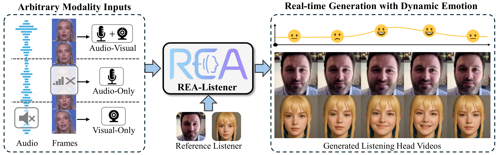
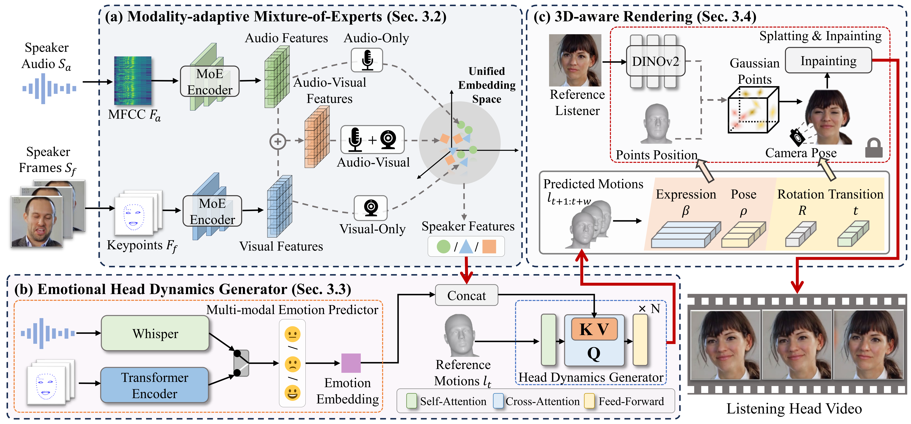

Abstract
Listening head generation aims to synthesize realistic and responsive non-verbal listener head motions that respond to speakers in conversational scenarios. Existing methods typically rely on fixed audio-visual input modalities and predefined emotion labels, limiting their adaptability and expressiveness in real-world scenarios. In this paper, we propose a novel real-time framework, REA-Listener, to generate high-fidelity listening head videos with flexible modality adaptation and dynamic emotion modeling. Specifically, we first propose a Modality-Adaptive Mixture of Experts module to encode arbitrary combinations of speaker audio and visual signals into a unified embedding space, ensuring robustness under partial modality conditions. To further enhance the temporal consistency of listener emotion, we present a lightweight emotional head dynamics generator with a multi-modal emotion predictor, which infers listener emotions dynamically from speaker context alongside head motion coefficient prediction. Finally, we employ a 3D-aware renderer based on 3D Gaussian Splatting to produce high-quality listener head videos in real time.
Framework

Modality-adaptive Mixture-of-Experts
Encodes cues from the speaker into a unified embedding space and stays robust under partial modality conditions.
Emotional Head Dynamics Generator
Predicts listener emotion from speaker context while generating responsive head motion coefficients over time.
3D-aware Rendering
Synthesizes realistic listening head videos in real time from the predicted listener motion and identity information.
Comparison with State-of-the-art Methods
Performance with Arbitrary Modality Inputs
Performance with different emotions
Stylized Listeners
BibTeX
@inproceedings{realistener2025,
title={REA-Listener: Real-Time Listening Head Generation with Dynamic Emotion Modeling and Flexible Modality Adaptation},
author={Zhao, Sizhe and Wang, Chenyang and Zhao, Weiyu and Li, Zonglin and Li, Ming and Zhang, Shengping},
booktitle={Proceedings of the 33th ACM International Conference on Multimedia},
year={2025}
}